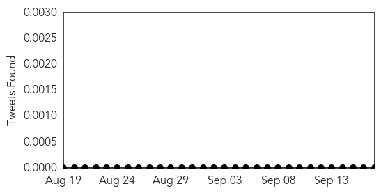
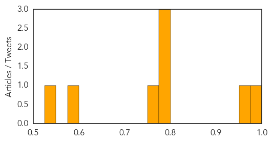

Mold/Fungal
30-Day Web Trend
0 alerts, 0 warnings
30-Day Twitter Trend
0 alerts, 0 warnings

Article Locations

Article Confidences

Top Articles:
Top Tweets:
-
No tweets found for Sep 17, 2015
West Nile Virus
30-Day Web Trend
1 alerts, 0 warnings
30-Day Twitter Trend
1 alerts, 0 warnings

Article Locations
Article Confidences
Top Articles:
- 0.994
- Novato man contracts West Nile virus, recovering at home after being hospitalized
- 0.965
- First West Nile case of 2015 reported in Clark County
- 0.796
- Four cases of West Nile in Queens so far
- 0.787
- Horse outside Watsonville tests positive for West Nile
- 0.780
- No West Nile Cases Reported In Greater Nebraska This Year
- 0.757
- 2 more human cases of West Nile Virus reported in Oklahoma County
- 0.576
- West Nile patient continues recovery
- 0.530
- Laurel woman dies from West Nile Virus
Top Tweets:
-
No tweets found for Sep 17, 2015